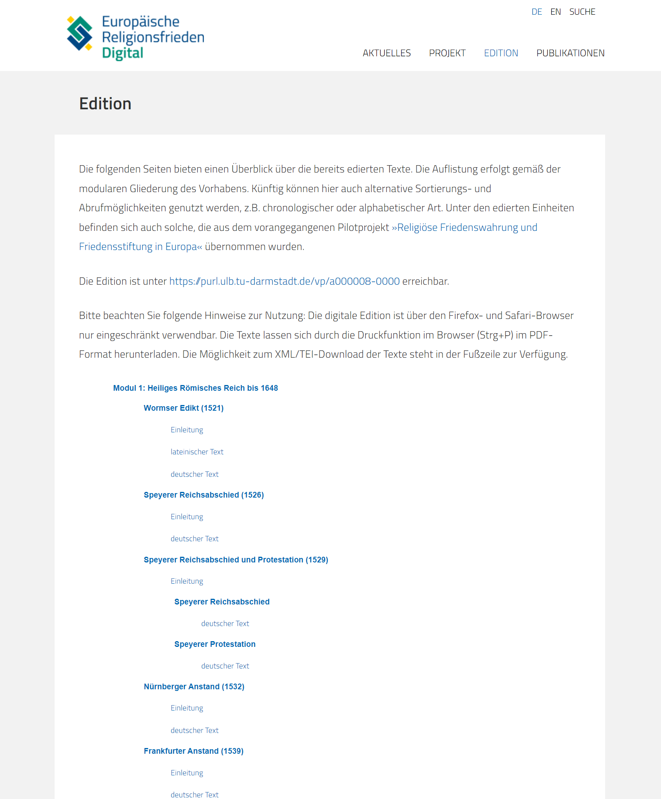
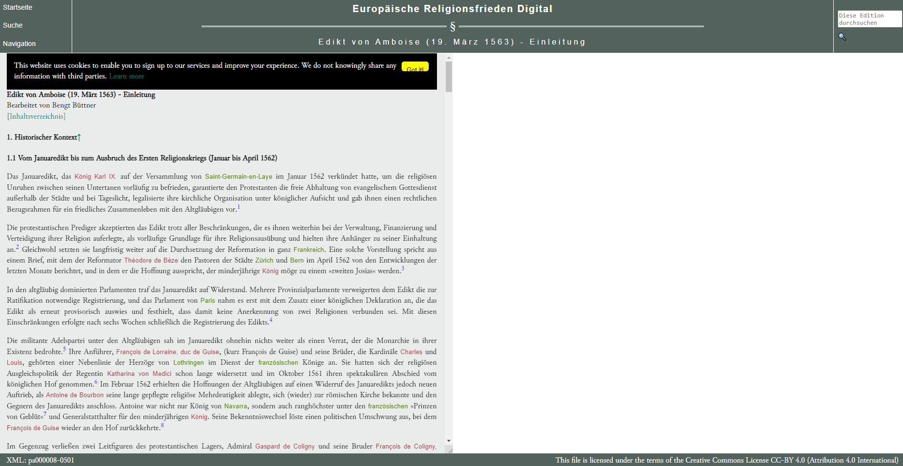
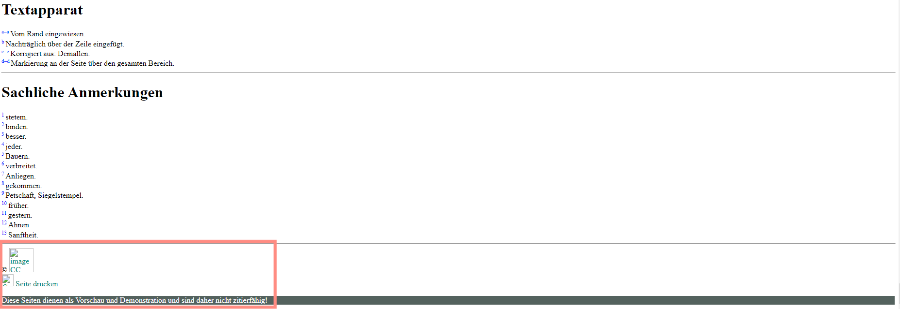
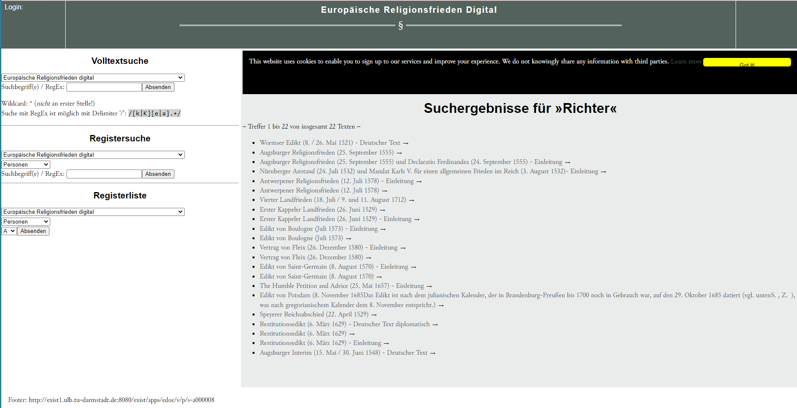
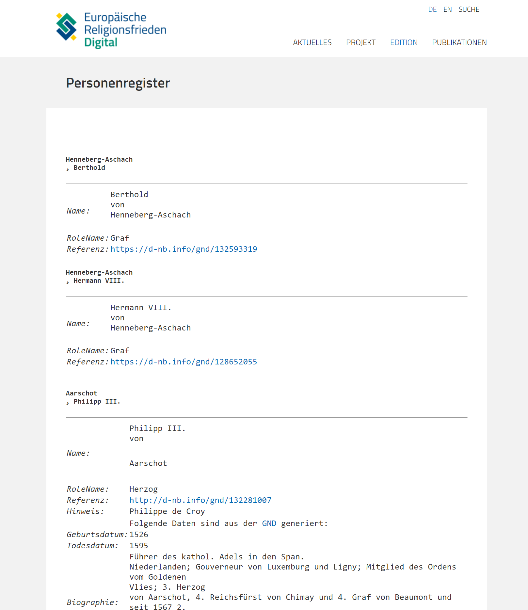
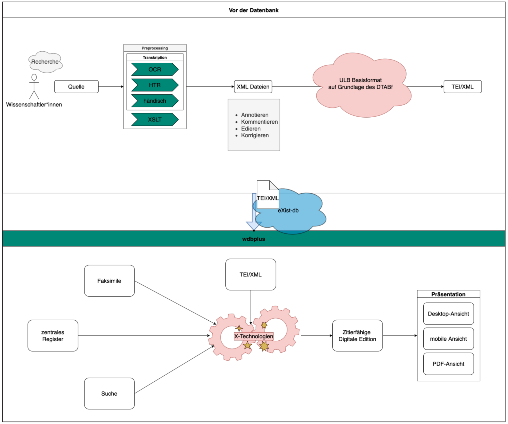

Europäische Religionsfrieden Digital
Table of Contents
- Abstract
- Das Editionsvorhaben Europäische Religionsfrieden Digital – Ziel, Kontext, Status Die Rezension erfolgte im Herbst 2022 und wurde per 18.01.2023 abgeschlossen. Der Stand der Edition und alle Verweise beziehen sich auf dieses Datum. Für die Begutachtung wurden aktuelle Versionen der Webbrowser Google Chrome und Mozilla Firefox eingesetzt.
- Aus unterschiedlichsten historischen Dokumenten eine Edition schaffen – Struktur und Inhalt
- Ein spezifischer Blick auf die Vielfalt – FAIR-Data-Kriterien
- Ein Langzeitprojekt in Entwicklung – Fazit/Ausblick
- Bibliography
- Notes
Abstract
The project European Religious Peace Agreements - A Digital Edition (EuReD) is a long-term project in the Academies’ Program of the Union of German Academies, which focuses on the period after the European religious wars and is based on various already existing editions. It aims to lay the foundation for further research in religious studies, cultural studies, linguistics, and history. By reprocessing and re-using data and tools from previous projects, the long-term project represents a remarkable FAIR Data use case. Through solid editorial craftsmanship and the avoidance of visual or technical novelties, the project itself is geared toward long-term usability. By making the worked-upon documents accessible from the early funding phase, the project embraces openness and provides insight into the editorial process. Expectedly, there are gaps and ambiguities, which – at this early stage – are unavoidable and are mentioned by the reviewers in favor of the project's further development rather than to point out definite weaknesses.
Das Editionsvorhaben Europäische Religionsfrieden Digital – Ziel, Kontext, Status Die Rezension erfolgte im Herbst 2022 und wurde per 18.01.2023 abgeschlossen. Der Stand der Edition und alle Verweise beziehen sich auf dieses Datum. Für die Begutachtung wurden aktuelle Versionen der Webbrowser Google Chrome und Mozilla Firefox eingesetzt.
Europäische Religionsfrieden Digital ist ein im Januar 2020 angelaufenes, auf 21 Jahre ausgelegtes und mit einem jährlichen Fördervolumen von 325.000 € alimentiertes Langzeitprojekt im Akademienprogramm, das eine Quellenedition der Rechtsdokumente zum Ziel hat, die das Zusammenleben der christlichen Konfessionen nach der Reformation regelten. Es vereint als Kooperationspartner die Akademie der Wissenschaften und der Literatur Mainz, das Leibniz-Institut für Europäische Geschichte, Mainz, und die Universitäts- und Landesbibliothek Darmstadt.
Das Editionsvorhaben wird geleitet durch Prof. Dr. Irene Dingel, Direktorin des Leibniz-Instituts für Europäische Geschichte Mainz, Abteilung für Abendländische Religionsgeschichte, und Prof. Dr. Thomas Stäcker, Direktor der Universitäts- und Landesbibliothek Darmstadt. Gemeinsam haben sie bereits das thematisch eng verwandte DFG-Vorhaben Religiöse Friedenswahrung und Friedensstiftung in Europa (2013–2020) verantwortet.2 Diese Ausgangslage ermöglichte gleichsam einen Warmstart, indem auf bestehende Grundlagen konzeptueller und technischer Art zurückgegriffen werden konnte (Editionskonzept, Datenmodell, Präsentationsformen, Softwarekomponenten). Maßgebliche Arbeiten in der technischen Umsetzung wurden und werden durch Silke Kalmer, Dario Kampkaspar und Kevin Wunsch geleistet.
Im Zentrum des Vorhabens steht das Entstehen politisch-rechtlicher Ordnungen religiöser bzw. konfessioneller Koexistenz in der Frühen Neuzeit. Solche ‚Religionsfrieden‘ regelten das Zusammenleben der christlichen Konfessionen nach der Reformation. Die Sammlung und Edition der Quellendokumente soll die Aushandlungsprozesse erhellen, die solchen Friedensschlüssen zugrunde liegen. Sie umfasst vorwiegend Rechtsdokumente wie Edikte, Abschiede oder Verträge, mit denen sich die historische Forschung schon lange und intensiv befasst, die aber im laufenden Editionsprojekt erstmals in einem größeren Zusammenhang bearbeitet, kontextualisiert und präsentiert werden. Dabei richtet sich die resultierende im Web frei zugängliche Ressource nicht nur an ein Fachpublikum (aus den Fächern Geschichte und Linguistik sowie teilweise der Philologien der entsprechenden Sprachen), sondern an ein weites interessiertes Publikum und strebt insbesondere auch die interdisziplinäre Verwendung in der universitären Lehre und im Schulunterricht an.3 Die Erklärung einer Vielzahl von Begriffen und die Verknüpfung von Personen- und Ortsdaten unterstützen diese Zwecke und insbesondere auch die lineare Lektüre, d. h. die ‚herkömmliche‘ Nutzung einer Edition.
Die Edition zielt auf das historische und kulturwissenschaftliche Grundbedürfnis ab, die gesellschaftlichen und politischen Entwicklungen der Reformationszeit (im weiten Sinn) aus den publizierten und diskutierten Textzeugen gesammelt und somit bis zu einem gewissen Grad vergleich- und synthetisierbar zugänglich zu machen. Angestrebt wird die Herstellung eines digitalen Referenzkorpus, das sich in vielerlei Weise auswerten lässt. Indem die Auswahl nicht nur die handschriftlich ausgefertigten Urkunden oder Skizzen, sondern auch unterschiedliche Druckausgaben einschließt, wirft sie Fragen nach der Autorität zentraler Dokumente dieser konfliktreichen Zeit auf und birgt auch aus der Perspektive des Medienwandels spannende Potenziale.
Die bereits verfügbaren Editionsteile entstammen unterschiedlichen Quellen und basieren teilweise auf gedruckten Editionen, teilweise auf Vorarbeiten aus dem DFG-Projekt Religiöse Friedenswahrung und Friedensstiftung in Europa (1500–1800): Digitale Quellenedition frühneuzeitlicher Religionsfrieden und dem seit 2020 laufenden Langzeitvorhaben Europäische Religionsfrieden Digital. Die Genese der Edition ist entsprechend komplex und vor allem noch im Gange. Obwohl der Abschluss der Edition in weiter Ferne liegt, können bereits umgesetzte Teile eingesehen und daher auch wissenschaftlich genutzt werden. Indem der Work-in-progress-Charakter der Edition prominent deklariert wird,4 relativieren sich mögliche technische und handwerkliche Unvollkommenheiten und die Unabgeschlossenheit der Edition wird unmissverständlich kommuniziert. Diese Rezension nimmt diesen Zustand gerne zur Kenntnis und versteht sich als Zwischenfazit, das aufzuzeigen versucht, welche Teile bereits gut funktionieren und wo noch Potenzial brach liegt.5 Die Herausforderung für die vorliegende Seite liegt damit denn auch in der Unabgeschlossenheit des Langzeitprojekts und dessen lange andauernde Weiterbearbeitung.
Das DFG-Vorläuferprojekt, von den Herausgebern als „Erprobungsstudie“6 bezeichnet, sah sich den Projektergebnissen in der GEPRIS-Datenbank zufolge „durch die rasanten Entwicklungen in den Digital Humanities und durch signifikante externe Faktoren beeinflusst“.7 Ein solcher eminenter Faktor war sicherlich Stäckers Wechsel von der HAB Wolfenbüttel an die ULB Darmstadt zum 01.10.2017 mit dem damit einhergehenden Umzug der Edition an das an der ULB Darmstadt entstehende Zentrum für digitale Editionen in Darmstadt (ZEiD). Dadurch und im Zuge der Einrichtung eines Digital Labs am IEG Mainz erwuchs der Entschluss, „sich von dem nicht mehr zeitgemäßen, hybriden Charakter der Edition zu verabschieden und sie grundsätzlich digital anzulegen, um das Potenzial der Digitalität vollständig zur Geltung zur bringen.“8 Resultat des DFG-Vorhaben ist die unter https://purl.ulb.tu-darmstadt.de/vp/a000001 frei zur Verfügung gestellte digitale Quellenedition, dargeboten in der Präsentationsumgebung des ZEiD.9 Auch die digitalen Komponenten des laufenden Editionsprojekts werden durch das ZEiD betreut, wobei die gleiche technische Infrastruktur zum Einsatz kommt, auf die nachstehend noch näher eingegangen wird.
Diese institutionelle Einbettung wird im aktuellen Zustand der Projektpräsentation noch nicht deutlich und es bedarf der Durchsicht verschiedener Projektdatenbanken und -webseiten, um sich ein eingehenderes Verständnis des Projektzusammenhangs zu verschaffen. Vorbildlich ist indessen, dass auf der Ebene der TEI-Encodings die Verantwortlichkeiten transparent aufgezeigt werden.10 Zu wünschen wäre, dass diese Informationen auch in der Webpräsentation (besser) ersichtlich würden, sowohl auf der Ebene einzelner edierter Stücke als auch an zentraler Stelle in der Projektbeschreibung. Eine Zusammenführung wäre auch bezüglich der sich an unterschiedlichen Stellen befindlichen kurzen Einführungen und Erklärungen, etwa zu den Editionsrichtlinien,11 wertvoll.
Aus unterschiedlichsten historischen Dokumenten eine Edition schaffen – Struktur und Inhalt
Die inhaltliche Relevanz wurde bereits mehrfach angesprochen und steht aus Sicht der Reviewer außer Frage.12 Die Quellenauswahl wird im aktuellen Stand an keiner Stelle explizit besprochen, beruft sich jedoch auf einen implizit mitgedachten Katalog an politischen Entscheidungen und Verhandlungen, die durch die Edition kombiniert greifbar gemacht werden können. Die Edition folgt damit einem politikgeschichtlichen Ansatz, der aber von einer weiten (kulturhistorisch) geprägten Vorstellung von ‚Politik‘ getragen wird. Das Rückgrat bildet eine Unterteilung der insgesamt 234 Texte mit Religionsfriedensregelungen aus der Zeit zwischen 1485 (Kuttenberger Landtagsabschied) und 1791 (Constitution Française) in zwölf Module nach herrschaftlich-territorialen (Module 1-8), konfessionell-migrantischen (Modul 9) und inhaltlichen Gesichtspunkten (Module 10-12).
Ein zentrales methodisches Dogma einer digitalen Edition ist typischerweise die Trennung von Form und Inhalt. Inhaltliche Teile der Edition sollen mit semantisch sprechenden Auszeichnungen markiert werden, während die Form unabhängig davon generiert wird. Wenden wir diese Trennung auf das Vorhaben als Ganzes an, so wird rasch deutlich, dass die inhaltliche Relevanz außer Frage steht. Die angeschnittene Thematik ist historisch aus kultur-, sozial- und politikwissenschaftlicher Sicht von höchstem Interesse. Mit den Religionsfrieden und den damit eng verknüpft vorausgehenden (kriegerischen) Auseinandersetzungen werden zentrale Ereignisse und Entwicklungen in der europäischen Geschichte thematisiert, die teilweise bis heute Wirkungen zeigen.
Aus formaler Sicht identifizieren wir ein Projekt, das von einem Aggregats- oder Plattform-Gedanken angetrieben wird, der alle Dokumente, die sich mit der Thematik auseinandersetzen, zusammenführen will und gleichermaßen bestehende wie neu angelegte Editionen dieser Stücke einarbeitet. Versprochen wird somit unausgesprochen eine virtuelle Forschungsumgebung (VRE), die für die Zeit und die Themen aufschlussreiche Vergleiche erlaubt. Inwiefern auch distant reading Ansätze durch die VRE angeboten oder erleichtert verfügbar gemacht werden, bleibt offen.
Die Edition setzt sich aus einer Vielzahl von Editionsteilen zusammen, die häufig auf älteren Vorarbeiten aufbauen. Nachvollziehen lässt sich dies etwa anhand des Passauer Vertrags (1532), der aus der Edition von Drecoll mit weiteren Handschriften kollationiert und ins Digitale migriert wurde (s. Drecoll 2000). Dabei wurden aber die Editionsdaten sauber in TEI-XML umgearbeitet und nicht etwa ‚nur‘ eine Retrodigitalisierung vorgenommen.
Die große Leistung des Editionsunternehmens besteht in der Vereinheitlichung, Kollation und, falls nicht deutschsprachig, professionellen Übersetzung der Quellen. Zur Verfügung gestellt werden diese als nach einheitlichen Editions- und v.a. Transkriptionsregeln bearbeitete und in sinnvoller Tiefe erschlossene Texte mit ausführlichem Anmerkungsapparat und teilweise einem Variantenapparat.13 Dadurch entsteht ein dichtes Netz an Texten, die sich im Laufe der Edition immer stärker explizit, aber vielfach auch implizit aufeinander beziehen werden.
Als gutes Beispiel kann der Editionsteil zum ersten Kappeller Landfrieden gelten.14 Die Einleitung führt kurz, aber konzise in die historischen Gegebenheiten ein. Im Kapitel deutscher Text wird der Urkundentext in Varianten (Ausfertigungen für Zürich, Luzern und Bern) vorgelegt.15 Will man nach der Lektüre der Einleitung die Transkription ansteuern, erweist sich das als eher umständlich, da die Navigationslinks nur über das Hauptinhaltsverzeichnis verfügbar sind. Hier wären entsprechende Direktverweise sehr hilfreich, beispielsweise im lokalen Inhaltsverzeichnis der Einleitung oder an deren Ende.
Sowohl in der Einführung als auch in den Transkriptionen/Textteilen werden Personen über GND-Links ausgewiesen, über die auf Klick interlinear kontextualisierende Informationen eingeblendet werden, ohne die betreffende Textstelle zu verdecken. Der Informationsgehalt ist dabei noch nicht sehr umfangreich, wiedergegeben wird aber zumindest der normalisierte Name mit einer Kürzestcharakterisierung und einem Verweis zum GND-Eintrag. Der Fokus auf sehr wenige, stabile Normdaten ist aufgrund des Umfangs der Edition und primär der langfristigen Ausrichtung nachvollziehbar. Er kann als Grundlage einer vertieften Linked-Open-Data-Integration dienen, die die mittelfristige Projektplanung hoffentlich vorsieht. In diesem Zusammenhang sollte auch eine projektinterne Indexierung der verknüpften Stellen erfolgen, um den Bestand flexibel durchsuch- und auswertbar zu machen.
In der TEI-Datei sind diese Angaben (inkl. GND-Link) im Metadatenbereich (teiHeader) in einer Personenliste hinterlegt. Die Edition zeichnet jedes Vorkommen einer bestimmten Entität auf diese Weise auf, bietet aber noch keine direkten Links zu anderen Editionsteilen, in denen die gleiche Entität vorkommt. Für Ortsangaben kommt ein analoges Verfahren zur Anwendung, das Geonames-Normdaten anbindet. Das Literaturverzeichnis wird selbständig gepflegt und wurde um Verweise auf die maßgeblichen VD16/17-Register angereichert.
Innerhalb der XML-Dokumente werden die Verweise gebündelt und mit den entsprechenden Normdaten verlinkt. Dadurch können auch Wörter ausgezeichnet werden, die zwar keine benannten Entitäten sind (im Sinne von named entities), sondern reference strings, die auf Entitäten verweisen (typisches Beispiel etwa ein „Kaiser“, der aufgrund der Datierung des Dokuments klar identifiziert und personifiziert werden kann).
Die Textkonstitution ist sehr seriös erfolgt und über die spezialisierten Einleitungen auch ausgesprochen sauber dokumentiert und in den historischen Kontext eingebettet. Alle notwendigen Informationen sind also gut fassbar und in wissenschaftlicher Qualität erarbeitet. Der Zeichensatz entspricht gängigen editorischen Standards und es wird zwischen Stab- und Rund-s unterschieden. Abkürzungen werden stillschweigend aufgelöst.
Die Präsentation der Texte ist an sich schlicht. Der Editionstext wirkt recht unruhig, da eine Vielzahl von Farben eingesetzt werden und Fußnoten im Text sehr präsent gemacht werden. Normalisierungen und Anmerkungen lassen sich trotz umfangreichem Farbeinsatz nicht optisch unterscheiden. Auch Sachanmerkungen und der Textapparat ähneln sich, da beide blau sind; die zwei Kategorien lassen sich aber durch die Verweissymbole unterscheiden (numerische/alphabetische Reihung). Die usability ist eine weitere Herausforderung, da etwa Fußnoten als Tooltips (mit Anfahren durch den Mauszeiger) sichtbar gemacht werden, während Anmerkungen per Klick aufgerufen werden.
Gemäß etablierter Praxis wird zu den edierten Dokumenten ein Digitalisat mitgeliefert. Im Fall des ersten Kappeller Landfriedens bleibt allerdings unklar, welche Urkundenausfertigung als Bild reproduziert wurde. Dass es sich um das im Staatsarchiv Luzern aufbewahrte Dokument handelt, liegt aufgrund der Orientierung an der Luzerner Ausfertigung nahe, lässt sich aber nur durch Aufruf der externen Bildquelle verifizieren.16
Text und Bild sind auf der Ebene der TEI-Dateien miteinander verknüpft, in der Webpräsentation wird diese Verknüpfung aber nur eingeschränkt umgesetzt, indem durch Klick auf die Seitenmarker („[Blatt: 3]“) die Ansicht im Viewer aktualisiert wird. Dieser Mechanismus ist nicht evident und man würde eher ein automatisches Umblättern oder Mitscrollen erwarten. Für dicht beschriebene Textträger wie die Urkunde des Kappeler Landfriedens wäre überdies eine Referenzierung des Digitalisats unterhalb der Seiteneinheit hilfreich zur einfacheren Orientierung im Digitalisat. Zur Definition einzelner Einheiten wählt die Edition insgesamt eine relativ grobe Granularität. Es wird jeweils das recht umfangreiche Dokument bzw. die Einleitung als einzelne Einheit adressiert (siehe auch unten zur Verlinkung, bspw. Fußnote 20) und zitierbar gehalten. Dadurch entsteht eine gewisse Abgeschlossenheit zwischen diesen einzelnen Einheiten, die nicht durchbrochen wird.
Medientheoretisch zeigt sich die Edition durchaus sensibel, da die unterschiedlichen Ausprägungen (Vorschrift, Konzept, Flugblatt, Edikt) vor allem in den Einleitungen reflektiert werden. Der damit in Verbindung stehende Variantenapparat, der Abweichungen nachvollziehbar macht und primär für die Dialektologie und Linguistik von Interesse sein wird, unterstreicht dies.
Hinsichtlich angebotener Ausgabeformate ist die Edition ausgesprochen sparsam. Zum Druck der Dokumente oder der Erzeugung von PDF-Dateien wird gegenwärtig die Nutzung der Druckfunktion des Webbrowsers empfohlen.17 TEI-XML-Dateien lassen sich über einen Link in der Fußzeile der Seite oder programmatisch über eine Datenschnittstelle herunterladen, weitere Formate scheinen dagegen nicht vorgesehen zu sein (z. B. ePub). Periodisch werden Aktualitäten in Form von Blog-Postings unter https://eured.de/aktuelles/ veröffentlicht, die in aller Kürze Einblick in den Projektablauf, Veröffentlichungen und Aktivitäten geben. Auf Social-Media-Plattformen findet das Projekt gelegentlich auf den institutionellen Konten der beteiligten Institutionen Erwähnung, tritt selbst aber nicht aktiv in Erscheinung, sodass auch keine Feeds o.ä. auf der Seite eingebunden werden. Dadurch erreicht das Projekt keine besonders hohe Sichtbarkeit, aus Sicht des Betreuungsaufwandes und der Wartbarkeit ist dieser Verzicht aber vertretbar.
Die Angaben auf den unterschiedlichen Webseiten zeugen insgesamt von einer gewissen Zurückhaltung und Nüchternheit. Die Edition kündigt keine bahnbrechenden Zugänge oder neuartigen Umsetzungsformen an. Vielmehr wird auf die einzelnen Teile verwiesen und den Plan, langfristig ein massives, aber auch disparates Textkorpus zugänglich zu machen, das vorwiegend inhaltlich kohärent ist.
Ein spezifischer Blick auf die Vielfalt – FAIR-Data-Kriterien
Der gemeinsame Aufruf des NFDI-Konsortiums Text+ und des Instituts für Dokumentologie und Editorik (IDE)18, der den Ausschlag zur vorliegenden Rezension gab, legt einen Fokus auf die FAIR-Data-Prinzipien.19 Die folgenden Abschnitte richten das Augenmerk auf diesbezüglich relevante Punkte. Bedingt durch beträchtliche inhaltliche Überlappungen und im Bestreben, den Lesefluss störende Repetitionen zu vermeiden, fassen wir jeweils zwei FAIR-Aspekte zusammen.
Auffindbarkeit (findable) und Zugänglichkeit (accessible)
Dass die Edition im gegenwärtigen, recht frühen work-in-progress-Stadium gewisse Defizite aufweist, was die Auffindbarkeit und den mühelosen Nachvollzug der verhältnismäßig komplexen Projektstruktur betrifft, verwundert nicht. Bemüht man gängige Suchmaschinen, findet man durch die Kombination naheliegender Begriffe wie „Edition“ und „Religionsfrieden“ ohne Probleme zu Ressourcen aus dem Projektzusammenhang, etwa der eured-Seite, jener der DFG-Vorgängeredition oder Webpräsenzen der direkt und indirekt beteiligten Institutionen (IEG Mainz, HAB Wolfenbüttel, ULB Darmstadt). Wie oben bereits angesprochen, erschließt sich die Konfiguration des Projekts und seiner Bestandteile aber nicht ohne Weiteres und selbst nach intensiverer Beschäftigung mit der Edition ist nicht immer klar, wie bestimmte Teile mit dem Ganzen zusammenhängen und welchen Bearbeitungs- oder Publikationsstand sie reflektieren.

 
Zum Begutachtungszeitpunkt scheinen die edierten Dokumente über die Bibliothekskataloge noch nicht auffindbar zu sein, auch nicht jene der beteiligten Institutionen. Im Wuppertaler Digital Scholarly Editions Catalog, der von Patrick Sahle et al. verantwortet wird, findet sich bislang lediglich das Vorläuferprojekt Religiöse Friedenswahrung und Friedensstiftung in Europa (1500–1800): Digitale Quellenedition frühneuzeitlicher Religionsfrieden und im Katalog von Franzini (gehostet durch das ACDH) fehlt ein Eintrag noch komplett.23 Um der Vielfalt der Edition gerecht zu werden, wäre es begrüßenswert, wenn zu gegebener Zeit auch die einzelnen edierten Dokumente in die Kataloge aufgenommen würden und nicht nur das übergreifende Editionsprojekt.
 
Die Einstiegsseite in die digitale Edition weist darauf hin, dass die Edition mit gängigen Webbrowsern wie Firefox oder Safari nur eingeschränkt verwendbar ist. Hier sollte unbedingt Abhilfe geschaffen werden, weil diese Situation die Zugänglichkeit der Ressource stark einschränkt. Von der Nutzung von Funktionalitäten, deren Spezifikation nicht abgeschlossen ist und die erst durch einzelne Browser unterstützt werden, ist aus Sicht der Zugänglichkeit, Wartbarkeit und Langzeitverfügbarkeit einer Edition grundsätzlich abzuraten. Nach unserer Einschätzung liegen die Kompatibilitätsprobleme der Religionsfrieden-Edition aber nicht am Einsatz exotischer Features und sollten sich durch bessere Serverkonfiguration zumindest teilweise beheben lassen.24
Der Aspekt der Zugänglichkeit betrifft natürlich nicht nur die im Netz verfügbare Präsentation, sondern auch die Daten an sich. Hier wendet das Projekt durch die sehr offene, lediglich die Namensnennung des Urhebers bedingende Lizenzierung (Creative Commons BY) eine mustergültige Regelung an. Eine gewisse Verwirrung stiftet allerdings die Diskrepanz der angegebenen Lizenzversionen in den TEI-Dateien und dem Textlink in der Webpräsentation (jeweils CC BY 4.0) beziehungsweise der davon abweichenden über das Lizenz-Icon unterhalb des Transkriptionsteils verlinkten Lizenzversion (CC BY 2.0). Wir gehen davon aus, dass es sich um übliche geringfügige Wachstumsschmerzen handelt, die sich künftig verflüchtigen werden (im konkret vorliegenden Fall durch Vereinheitlichung).
Sowohl im Bereich der Auffindbarkeit und Zugänglichkeit der Ressource als Ganzes als auch in der Navigation in und zwischen ihren Teilen besteht stellenweise Verbesserungsbedarf. Die Benutzungsführung wird in der weiteren Entwicklung zweifellos noch stärker in den Fokus rücken, wodurch die Edition wesentlich gewinnen dürfte.
Interoperabilität (interoperable) und Nachnutzbarkeit (reusable)
Das Editionsprojekt nutzt zur Beschreibung der Quellentranskriptionen und Einleitungen das durch die Richtlinien der Text-Encoding-Initiative (TEI) bereitgestellte XML-Repertoire (Version P5), wie es im Übrigen schon beim Vorläuferprojekt gemacht wurde. Selbstredend ist die Nutzung der TEI nicht per se mit einem hohen Interoperabilitätsgrad gleichzusetzen, dazu sind die Gepflogenheiten in unterschiedlichen Projekten zu vielfältig. Aber die Umsetzung im Religionsfrieden-Projekt und die dadurch erzeugten Daten lassen sich durchaus als interoperabel bezeichnen.
Die TEI-Dateien des Projekts sind frei zugänglich, klar strukturiert
und enthalten essentielle Metadaten zu Urhebern und Nutzungsmöglichkeiten. Zu kurz
greift im Fall der edierten Texte die Angabe „Born digital“ im Element
<sourceDesc>, in dem zumindest grundlegende Informationen
zur edierten Quelle aufgezeichnet werden sollten, im Idealfall eine ausführliche
Handschriftenbeschreibung. Dass jede Datei eine Auflistung aller relevanten
Entitäten enthält, begünstigt die direkte Nachnutzung. Wünschenswert wären aber,
wie an anderer Stelle vermerkt, etwas mehr Informationen zu den einzelnen
Entitäten, die selbstverständlich auch an zentraler Stelle im Projekt gepflegt und
verlinkt werden könnten. Die Interpretierbarkeit wird dadurch eingeschränkt, dass
das zugrundeliegende Datenmodell nicht einsehbar ist. Die TEI-Dateien sind mit
einem Relax-Schema verknüpft (religionsfrieden-quellentexte.rng), das sich
bedauerlicherweise nicht abrufen bzw. dessen relative Adressierung sich nicht
auflösen lässt. Dass die verwendeten Elemente, Attribute und Attributwerte gut
nachvollziehbar sind, lindert dieses Problem etwas. Da die Transformation Teil
einer monolithischen Webanwendung ist, lässt sich die Transformationslogik,
vermittels derer die Präsentation, also die Webdarstellung, erzeugt wird, nur über
das Source-Code-Repository erschließen.25
Keine Rolle zu spielen scheint im Projekt der deklarative ODD-Ansatz und die
Nutzung des TEI-Processing-Models, das in jüngerer Zeit im Zusammenhang mit
modellspezifischem Browserrendering an Bedeutung gewonnen hat (etwa durch den
Verein e-editiones bzw. den TEI-Publisher).26
Falls noch nicht in Planung, so empfehlen wir dem Projekt eine vollständige, auch eine formalisierte Modellbeschreibung enthaltende Datenablieferung an ein frei zugängliches Forschungsdatenrepositorium (bereitgestellt durch die ULB der TU Darmstadt oder eine externe Institution wie im Fall von Zenodo). Dies würde als Nebeneffekt den von Mitherausgeber Thomas Stäcker vertretenen Standpunkt stärken, dass eine digitale Edition nicht mit ihrer Präsentation gleichzusetzen sei, im Grunde ohne eine solche auskommen könne und jederzeit auch ohne konkrete technische Realisierung in sich komplett vorliegen könne.27
Das Editionsprojekt und die ihm zugrunde liegende Software28 bieten frei nutzbare Schnittstellen zur Datenabfrage an, was die Interoperabilität und Nachnutzbarkeit weiter steigert. Programmatische Abfragen können gegenwärtig drei unterschiedliche Bereiche betreffen (collection zur Abfrage einer Ressourcenliste, resource zur Abfrage einzelner Encodings und search zum Durchsuchen des Datenbestands). Weitere Methoden sind in Entwicklung, etwa zur Abfrage annotierter Stellen oder Entitäten.29 Letzteres scheint besonders vielversprechend, weil es die Herausarbeitung von Akteursnetzwerken ermöglichen würde.
Die Einbindung von Digitalisaten erfolgt für viele Dokumente aus externen Beständen. Dabei werden die Bilder über den bewährten OpenSeadragon-Viewer30 eingebunden und bieten grundlegende Manipulationsmöglichkeiten (Zoom, Rotation, Blättern), jedoch keine Anpassung von Kontrast und Helligkeit und keine Vollbildanzeige.31 Die Interoperabilität könnte in diesem Bereich durch die Nutzung der IIIF-Protokolle maßgeblich verbessert werden.32
Mit Blick auf die Nachnutzungspotenziale des Editionsvorhabens lohnt es sich hervorzuheben, dass das Editionsprojekt selbst bereits bestehende und in früheren Projektzusammenhängen erarbeitete Grundlagen aufnimmt und neu aufbereitet – Grundlagen, die in manchen Fällen ihrerseits schon auf vorab bestehenden Vorleistungen aufbauten. Diese Nachnutzung spielt sich sowohl auf inhaltlicher als auch auf technischer Ebene ab und scheint in beiden Bereichen durch personelle Kontinuität begünstigt zu werden.
Die inhaltliche Anschlussfähigkeit und Nachnutzung wurde bereits oben ausführlicher beschrieben und zeugt von einem sinnvollen Ressourceneinsatz. Sowohl als gelebte Form der Nachnutzung als auch für zukünftige Forschungen ist die reusability gegeben.
Wie eingangs erwähnt, stehen beim Editionsvorhaben relativ klassische Fragestellungen im Vordergrund: Wie wurde mit der Spaltung der Kirche umgegangen? Welche politischen Folgen hatten die Auseinandersetzungen der Reformation und inwiefern schlägt sich dies in zentralen Dokumenten nieder? Diese Fragen sind selbstredend zentral für eine europäische Geschichte, die keine Sonderfälle und -wege kennt, sondern den transnationalen Charakter der Zeit akzeptiert.
Die technischen Bestandteile der Edition weisen eine interessante Vorgeschichte auf, die recht weit zurück reicht. So wurde das Vorläuferprojekt in methodisch-technischer Hinsicht nach den Maßgaben der Wolfenbütteler Digitalen Bibliothek der HAB Wolfenbüttel (WDB) entwickelt.33 Dabei handelt es sich um eine relativ frühe (ab 1998), aber gut durchdachte Umgebung, die eine relationale Datenbank (MySQL) mit einer XML-nativen Datenbank (eXist DB) kombiniert. Als ihr interessantester Aspekt ist die vorbildliche Transparenz zu nennen; neben der HTML-Repräsentation sind auch die Datengrundlage (als in einer METS-Superstruktur verlinkte TEI P5-XML-Dateien) sowie die zur Erzeugung der Präsentation verwendete XSL-Transformation offen einsehbar. Dadurch nahm die heute aus guten Gründen als angejahrt geltende WDB die (erst viel später definierten) FAIR-Prinzipien der Zugänglichkeit, Interoperabilität und Nachnutzbarkeit zumindest in gewisser Hinsicht in vorbildlicher Weise vorweg.34 Und dies durchaus im Bewusstsein der Herausgeber, nach deren Auffassung die Bezeichnung Open Source besser zum WDB-System passt als Open Access, begründet durch die Verfügbarmachung nicht nur der Transkripte, sondern eben auch des Datenmodells (in Form eines Schemas) und der Transformationsskripte (vgl. Stäcker 2011, S. 122f.).

Resultat der langjährigen Entwicklungsarbeit ist eine relativ komplexe Software, die sowohl die Produktion als auch die Präsentation digitaler Editionen umfasst und künftig funktional noch erweitert werden dürfte, etwa durch die Integration machine learning-gestützter Workflows. Der drohenden überbordenden Komplexität begegnen die Entwickler durch mitunter tiefgreifende Systemanpassungen wie die Nutzung interner Schnittstellen zwecks Modularisierung funktionaler Komponenten, durch ergonomische Verbesserungen wie die Erledigung von Routinetasks durch Skripte oder durch die Umstellung auf ein zweckmäßiges internes Metadatenformat (wdbmeta38). Ob und welche Programmbestandteile zum Ende der Projektlaufzeit im Jahr 2041 noch im Einsatz sein werden, wird sich weisen. Die bisherige Geschichte von WDB, edoc und wdbplus zeigt jedenfalls, dass das Projektteam seine Werkzeuge über die Zeit und institutionelle Anpassungen hinweg in kontinuierlichem Betrieb zu halten und weiterzuentwickeln vermag.
Ein Langzeitprojekt in Entwicklung – Fazit/Ausblick
Die (Neu-)Edition der vielfältigen Dokumente zu den europäischen Religionsfrieden der Frühen Neuzeit ist ein wissenschaftliches Großprojekt, das Enormes leisten will und für die Erforschung der Epoche sowie diverser kulturwissenschaftlicher Perspektiven von herausragendem Wert ist. Bereits wenige Monate nach Aufnahme der Arbeiten im April 2020 zeigt sich, dass das Projektteam bestrebt ist, sehr solides Handwerk abzuliefern, das auch andere Editionen nachnutzen können.
Durch die besondere Projektkonstellation und den Anschluss an das DFG-Projekt Religiöse Friedenswahrung und Friedensstiftung in Europa (1500–1800): Digitale Quellenedition frühneuzeitlicher Religionsfrieden erreichte das Vorhaben sehr schnell Betriebstemperatur und einen überaus effizienten Ressourceneinsatz, begünstigt vor allem auch durch personelle Kontinuität. Diesen Faktoren ist es mit zu verdanken, dass das Projekt eine fortlaufende Publikationsform verfolgen kann, die dem digitalen Medium ideal entspricht. Durch die Weiterverwendung bestehender Datengrundlagen und Werkzeuge kommen zudem die FAIR-Data-Kriterien in bemerkenswerter Weise zum Tragen.
Der eingeschlagene Weg ist auf den ersten Blick in vielerlei Hinsicht eher konservativ zu bewerten, aber bei näherer Betrachtung zeigt sich, dass die Bestandteile des Projekts sich bewegen und laufend verbessert werden. Dabei gibt es viele Bereiche, in denen sich die Edition weiterentwickeln kann, ohne an Seriosität oder Wert einzubüßen, sondern im Gegenteil an beidem zu gewinnen. Zu nennen sind etwa
- eine Erneuerung des visuellen Auftritts, um aktuellen Rezeptionsgewohnheiten gerecht zu werden
- vollständige Datenexporte zu Archivierungszwecken, aber auch für freie Analysen oder als Lerndaten für die weitere Methodenentwicklung (Sprachmodelle, Hand- und Druckschriftenerkennung)
- Zusammenführung bestehender Handschriftenbeschreibungen
- ein konsolidiertes Gesamtregister, das einen Zugriff auf die Eliten Europas geben wird
- die Unterstützung von Werkzeugen zur Textidentifikation und feingranularen Referenzierungsmöglichkeit wie CITE („Collections, Indexes, Texts, and Extensions“) oder DTS (Distributed Text Services)
- computerlinguistische Auswertungsverfahren, etwa zur Identifikation von Diskursen oder zu begriffsgeschichtlichen Analysen über das gesamte Korpus
- Datenvernetzung und -visualisierung, etwa von Akteursnetzwerken
- Integration eines Versionierungssystems39
Zur Umsetzung dieser und sicherlich vieler weiterer Punkte bleiben dem Projektteam glücklicherweise noch fast zwei Dekaden. Das ist eine hervorragende Ausgangslage, die die Mitarbeiterinnen und Mitarbeiter in steter und gewissenhafter Weise sicherlich zu nutzen wissen
Bibliography
- Broyles, Paul A. 2020. “Digital Editions and Version Numbering.” Digital Humanities Quarterly 14 (2). DOI: 10.17613/bde5-rp28.
- Drecoll, Volker Henning (Hg.). 2000. Der Passauer Vertrag (1552): Einleitung und Edition (AKG, 79). Berlin: De Gruyter.
- Glaser, Eva Christina. 2013. Digitale Edition als Gegenstand bibliothekarischer Arbeit: Probleme, Umsetzung und Chancen am Beispiel der Wolfenbütteler Digitalen Bibliothek (WDB). Masterarbeit. DOI: 10.18452/2081.
- Henny, Ulrike. 2018. „Reviewing von digitalen Editionen im Kontext der Evaluation digitaler Forschungsergebnisse.“ In: Digitale Metamorphose: Digital Humanities und Editionswissenschaft (Sonderband der Zeitschrift für digitale Geisteswissenschaften, 2), hg. von Roland S. Kamzelak und Timo Steyer. DOI: 10.17175/sb002_006.
- Kalmer, Silke, Dario Kampkaspar, Sophie Müller, Melanie E.-H. Seltmann, Jörn Stegmeier und Kevin Wunsch. 2022. „Digitale Texte vom Religionsfrieden bis hin zum Liebesbrief - Das Zentrum für digitale Editionen in Darmstadt stellt sich vor.“ In: DHd2022: Kulturen des digitalen Gedächtnisses. Konferenzabstracts (8. Jahrestagung des Verbands Digital Humanities im deutschsprachigen Raum e.V.), hg. von Michaela Geierhos et al. Potsdam. DOI: 10.5281/zenodo.6322579.
- Stäcker, Thomas. 2011. „Creating the Knowledge Site – elektronische Editionen als Aufgabe einer Forschungsbibliothek.“ In: Digitale Edition und Forschungsbibliothek (Bibliothek und Wissenschaft, 44), hg. von Christiane Fritze et al., 107–126. Wiesbaden: Harrassowitz.
- Stäcker, Thomas. 2020. “›A digital edition is not visible‹ – some thoughts on the nature and persistence of digital editions.” Zeitschrift für digitale Geisteswissenschaften. DOI: 10.17175/2020_005.
- Wilkinson, Mark D. et al. 2016. „The FAIR Guiding Principles for scientific data management and stewardship.” Sci Data 3. DOI: 10.1038/sdata.2016.18.
Notes
- Die Rezension erfolgte im Herbst 2022 und wurde per 18.01.2023 abgeschlossen. Der Stand der Edition und alle Verweise beziehen sich auf dieses Datum. Für die Begutachtung wurden aktuelle Versionen der Webbrowser Google Chrome und Mozilla Firefox eingesetzt. ↑
- https://web.archive.org/web/20221110152618/https://gepris.dfg.de/gepris/projekt/237841745. ↑
- Das IEG Mainz ist am Horizon-2020-Projekt Religious Toleration and Peace (RETOPEA, Grant Agreement-Nr. 770309) beteiligt, das auf ein konfliktarmes religiöses Zusammenleben in der Gegenwart ausgerichtet ist. ↑
- Ein entsprechender Vermerk findet sich auf der Startseite https://eured.de/#box-edition (http://web.archive.org/web/20230112154723/https://eured.de/) und die Information ist in gleicher Form auch Teil der Projektbeschreibung (https://eured.de/projekt/projektbeschreibung/#box-edition bzw. http://web.archive.org/web/20230112153445/https://eured.de/projekt/projektbeschreibung/). ↑
- Zur Sinnhaftigkeit einer Rezension im Frühstadium siehe auch Henny 2018. ↑
- http://web.archive.org/web/20230112153445/https://eured.de/projekt/projektbeschreibung/. ↑
- https://web.archive.org/web/20221110152618/https://gepris.dfg.de/gepris/projekt/237841745/ergebnisse. ↑
- Ebd. ↑
- Im Netz erreichbar ist daneben auch weiterhin die frühere Wolfenbütteler Fassung (Stand 8. September 2017) beziehungsweise deren technisch-methodischer Doppelgänger an der ULB Darmstadt (Stand 5. August 2019). Vgl. http://web.archive.org/web/20230119201349/http://diglib.hab.de/edoc/ed000227/start.htm bzw. http://tueditions.ulb.tu-darmstadt.de/e000001/. Letztere Fassung ist aktuell im Projektbeschrieb des laufenden Akademievorhabens verlinkt (http://web.archive.org/web/20230112153445/https://eured.de/projekt/projektbeschreibung/). Insgesamt bleibt unklar, welche Version die autoritative ist. ↑
- Basierend auf dem SKOS Vocabulary Relators der Library of Congress: http://web.archive.org/web/20230119201617/https://id.loc.gov/vocabulary/relators.html. ↑
- Siehe online: http://web.archive.org/web/20230119201230/https://eured.de/edition/editionsrichtlinien/. ↑
- Peter Dängeli ist wissenschaftlicher Mitarbeiter (digitale Geisteswissenschaften, Data Science Lab) an der Universität Bern mit Expertise im Bereich digitaler Editionen und Interesse an Fragen ihres Langzeitbetriebs. Tobias Hodel ist tenure-track Assistenzprofessor für digitale Geisteswissenschaften an der Universität Bern. Er ist Mitherausgeber der digitalen Edition Königsfelden und beschäftigt sich seit einem Jahrzehnt mit digitalen Editionen, entstanden aus einer Anstellung bei der Sammlung Schweizerischer Rechtsquellen, SSRQ. ↑
- Siehe online: http://web.archive.org/web/20230116132646/https://eured.de/edition/editionsrichtlinien/. ↑
- https://purl.ulb.tu-darmstadt.de/vp/a000008-0415. ↑
- https://purl.ulb.tu-darmstadt.de/vp/a000008-0407. ↑
- http://web.archive.org/web/20230116130953/https://diglib.hab.de/wdb.php?dir=mss/ed000183; die bibliographische Beschreibung ist nicht (mehr) abrufbar, aber der auf dem zweiten Scan sichtbare Stempel mit handschriftlichem Zusatz verweist auf die Urkunde 50/1030 im Luzerner Staatsarchiv (http://web.archive.org/web/20230116131051/https://query-staatsarchiv.lu.ch/detail.aspx?ID=1210977). ↑
- Vgl. http://web.archive.org/web/20230116132646/https://eured.de/edition/editionsrichtlinien/. ↑
- Vgl. http://web.archive.org/web/20230114232359/https://dhhumanist.org/volume/35/644/. ↑
- Die viel beachteten FAIR-Kriterien gehen zurück auf Überlegungen der Arbeitsgruppe FAIR data publishing group (2014–2016). Die maßgebliche Veröffentlichung der Kriterien erfolgte in Wilkinson et al. 2016. Eine laufend aktualisierte Version der Prinzipien wird unter https://www.go-fair.org/ fair-principles gepflegt. ↑
- Bspw. wird das Edikt von Amboise, bearbeitet von Bengt Büttner, über die folgende PURL erreicht: https://purl.ulb.tu-darmstadt.de/vp/a000008-0501. Die Adresse ist aufgebaut aus einer Basis-URL, die auf das Gesamtprojekt verweist (https://purl.ulb.tu-darmstadt.de/vp/a000008) und einem dokumentspezifischen numerischen Suffix (hier 0501). ↑
- Einschlägige Expertise ist an der ULB der TU Darmstadt vorhanden und wird praktisch umgesetzt, etwa beim institutionellen Repositorium TUdatalib (DOI), der Veröffentlichung von OA-Journals (TUjournals, DOI/URN) oder beim Publikationsdienst TUprints (DOI). ↑
- Gegenwärtig werden Teile, die bereits bearbeitet, aber noch nicht abgeschlossen sind, in einer Entwurfsansicht angezeigt, die mit dem folgenden Vermerk versehen ist: „Diese Seiten dienen als Vorschau und Demonstration und sind daher nicht zitierfähig!“ (Beispiel: http://web.archive.org/web/20230114203217/https://purl.ulb.tu-darmstadt.de/vp/a000008-0304). ↑
- Vgl. https://www.digitale-edition.de/exist/apps/editions-browser/index.html?filter=religionsfrieden&filterBy=all&paper-range-slider=null. Zum Katalog von Franzini, siehe Catalogue Digital Editions (https://dig-ed-cat.acdh.oeaw.ac.at). ↑
- Beispielsweise werden manche aus externen Quellen eingebundenen Ressourcen (wie Bildmaterial von http://diglib.hab.de) aufgrund einer zu restriktiven Einstellung des Content-Security-Policy-Headers nicht in allen Browsern dargestellt. ↑
- http://web.archive.org/web/20230119200709/https://github.com/dariok/wdbplus/search?l=xslt. ↑
- Da es sich bis anhin um eine einseitige und werkzeugspezifische Erweiterung des Processing model handelt und nicht um eine allgemeine Anpassung der TEI-Richtlinien, ist dieser Entwicklung zum gegebenen Zeitpunkt eher experimentellen/explorativen Charakter beizumessen. Im Sinne der Konsolidierung könnte die Ausrichtung anders aufgebauter Projekte auf derartige Erweiterungen allerdings durchaus interessant sein. ↑
- Vgl. insbesondere Stäcker 2020 und siehe dazu auch https://web.archive.org/web/20181230112643/http://dch.phil-fak.uni-koeln.de/sites/dch/NDE-Workshop/Staecker.pdf und http://web.archive.org/web/20230116142933/https://dhd-blog.org/?p=11033. ↑
- Vgl. https://github.com/dariok/wdbplus/wiki/REST-endpoints. Diese Schnittstellen werden auch anwendungsintern genutzt, etwa durch die Bereitstellung eines Navigationselementes, das beim Seitenaufbau über eine Endpoint-Abfrage integriert wird. ↑
- Vgl. http://web.archive.org/web/20230115232538/https://eured.de/schnittstellen/. ↑
- http://web.archive.org/web/20230119195032/https://github.com/openseadragon/openseadragon. ↑
- Die Einbindung erfolgt direkt als JPG und nicht über das IIIF-Protokoll. Aufgrund eines restriktiven Content-Security-Policy-Headers lassen sich Bilder ab Fremddomains nicht in allen Browsern anzeigen. ↑
- Beispielsweise könnte das Digitalisat für https://purl.ulb.tu-darmstadt.de/vp/a000008-0112 über https://digitale.bibliothek.uni-halle.de/i3f/v20/3829790/info.json bezogen werden. ↑
- Zu Ursprung, Entwicklung, Struktur und Workflows der WDB vgl. die sehr informative Masterarbeit von Glaser 2013, Kapitel 3f. ↑
- Als Hinweis auf das Alter der Umgebung mag gelten, dass sie mit HTML-Frames umgesetzt ist, einem von Netscape 1996 eingeführten Feature, das spätestens mit HTML5 vollständig aus der Mode kam, u.a. weil die Verlinkung und damit der Zugang zu Teildokumenten in Frames sich als problematisch erwies (Frames werden als Legacy-Ansatz aber durch gängige Browser weiterhin unterstützt). Solche und ähnliche Probleme sowie ein insgesamt alternder Software-Stack bewogen das Team der HAB in der jüngeren Vergangenheit, die technische Infrastruktur und den organisatorischen Workflow neu zu konzipieren (vgl. 10.5281/zenodo.2619380). ↑
- Kampkaspar war von 2014 bis 2018 Mitarbeiter der HAB Wolfenbüttel, bevor er (zusätzlich zu einer Tätigkeit am Austrian Centre for Digital Humanities and Cultural Heritage) Mitte 2019 als Teamleiter ans ZEiD wechselte. ↑
- http://web.archive.org/web/20230119194621/https://github.com/dariok/wdbplus; Einblick in weitere Entwicklungsziele gibt http://web.archive.org/web/20230119194806/https://github.com/dariok/wdbplus/projects?type=classic. ↑
- http://web.archive.org/web/20230117212732/https://github.com/dariok/wdbplus/wiki. ↑
- http://web.archive.org/web/20230117213147/https://github.com/dariok/wdbmeta. ↑
- Aktuell zum Thema vgl. Broyles 2020. ↑
@article{europaeische-religionsfrieden,
author = {Hodel, Tobias and Dängeli, Peter},
title = {Europäische Religionsfrieden Digital},
journal = {RIDE – A review journal for digital editions and resources},
number = {17},
year = {2024},
doi = {10.18716/ride.a.17.3},
url = {https://doi.org/10.18716/ride.a.17.3},
}TY - JOUR
AU - Hodel, Tobias
AU - Dängeli, Peter
TI - Europäische Religionsfrieden Digital
T2 - RIDE – A review journal for digital editions and resources
IS - 17
PY - 2024
DA - 2024/05
DO - 10.18716/ride.a.17.3
UR - https://doi.org/10.18716/ride.a.17.3
PB - Institut für Dokumentologie und Editorik e.V.
LA - de
ER - Hodel, T., & Dängeli, P. (2024). Europäische Religionsfrieden Digital. RIDE – A review journal for digital editions and resources, (17). https://doi.org/10.18716/ride.a.17.3Hodel, Tobias, and Peter Dängeli. "Europäische Religionsfrieden Digital." RIDE – A review journal for digital editions and resources, no. 17, 2024. https://doi.org/10.18716/ride.a.17.3.Hodel, Tobias, and Peter Dängeli. "Europäische Religionsfrieden Digital." RIDE – A review journal for digital editions and resources, no. 17 (2024). https://doi.org/10.18716/ride.a.17.3.